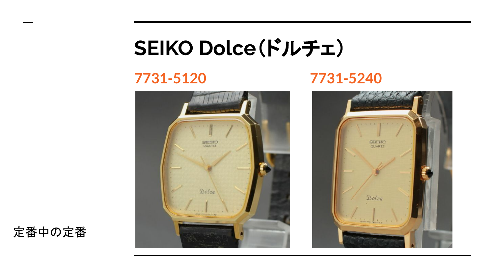
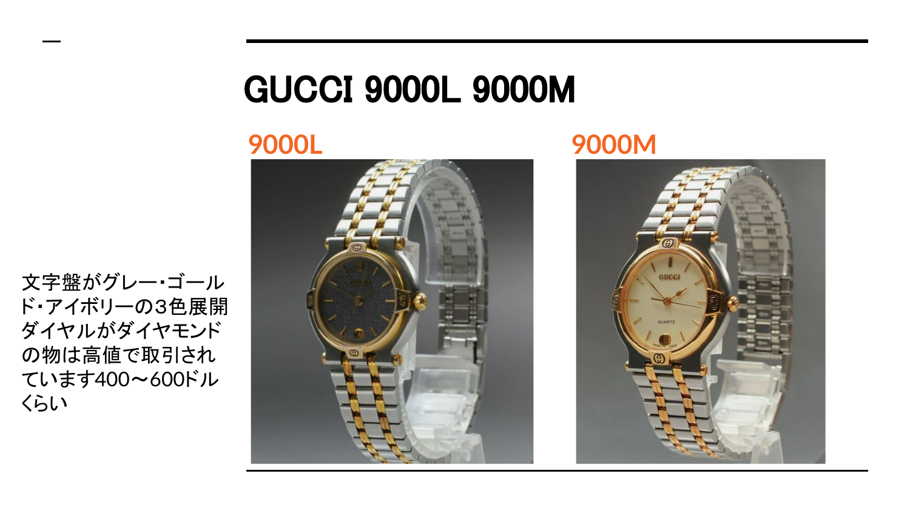
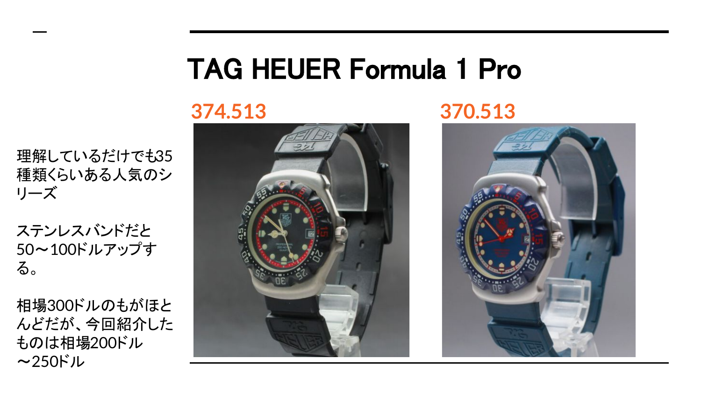
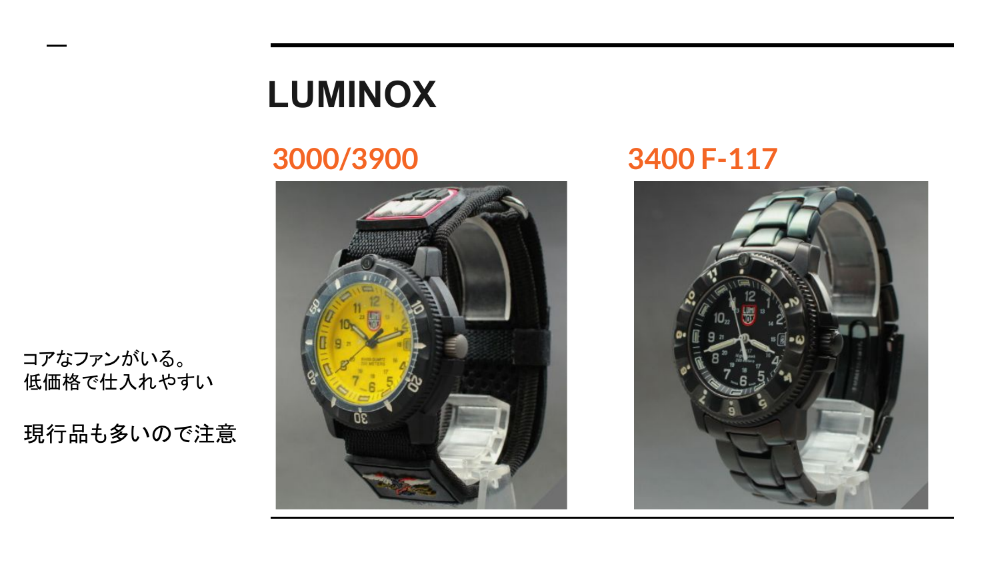

SEIKO
JAPAN型番が追いやすく、モデル数も豊富。Dolce、King Quartz、Flightmasterなど定番を覚えると横展開しやすいです。
最初に見るべきブランドを、低額・回転・仕入れやすさ・横展開の観点から整理しました。
初心者がいきなり高単価ブランドへ行くと、仕入れ資金と真贋リスクが重くなります。まずは低額で始められ、型番展開しやすいブランドから経験値を作ります。
型番が追いやすく、モデル数も豊富。Dolce、King Quartz、Flightmasterなど定番を覚えると横展開しやすいです。
9000、3000、1500/1900など型番ごとに展開しやすく、文字盤色や装飾で価格差を見られます。
Formula 1 Proなど人気シリーズがあり、色違い・ベルト違いを覚えると仕入れ判断が早くなります。
コアなファンがいて、低価格帯から見やすいブランド。ただし現行品も多いため、型番と相場確認は必須です。




4ブランドの中でも、まずはSEIKOの型番を覚えるとリサーチが進めやすくなります。